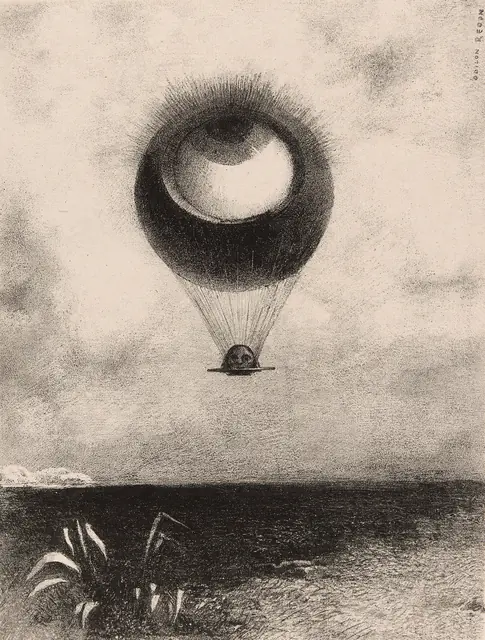
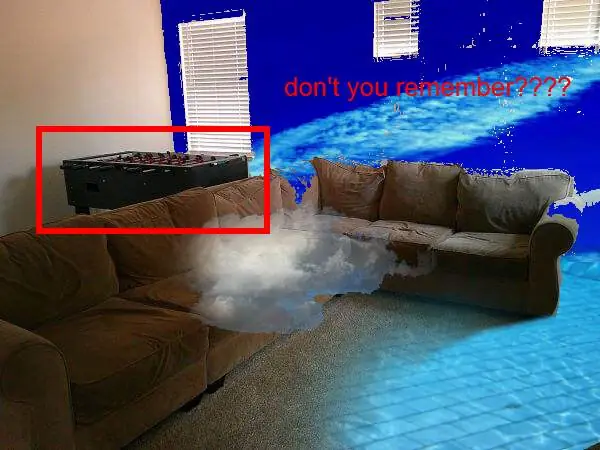
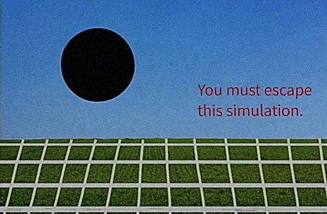
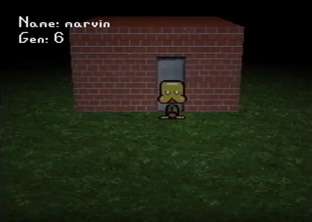
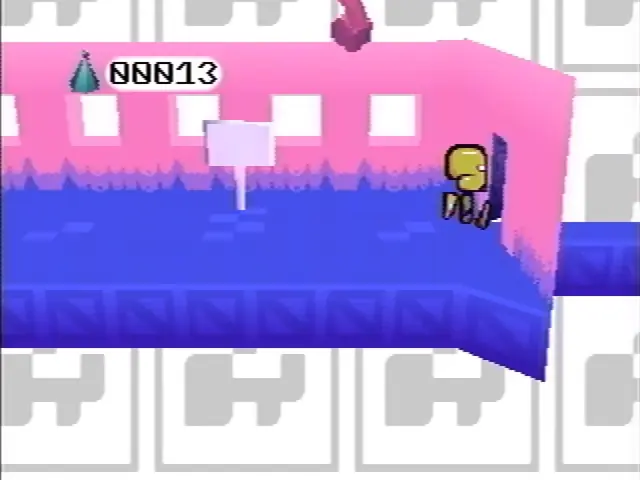
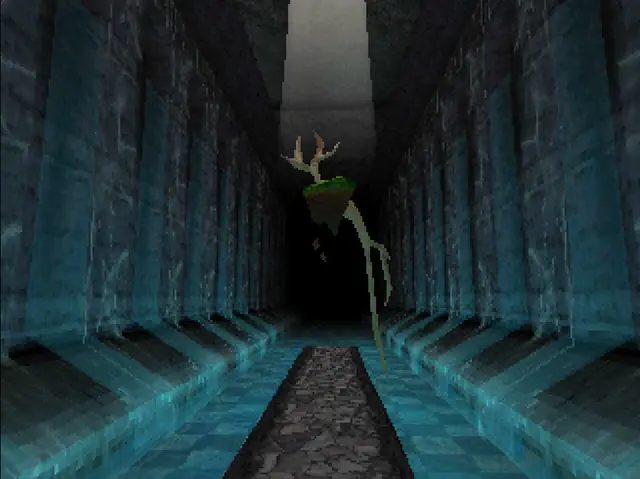
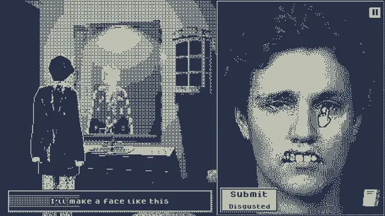
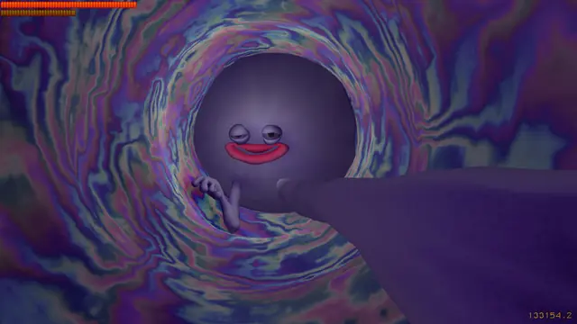
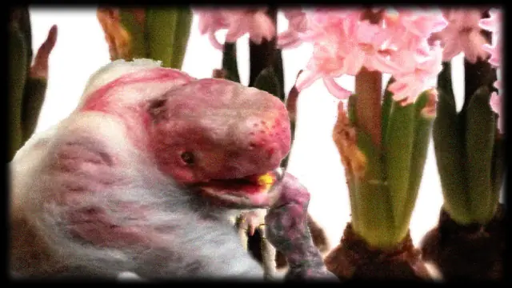
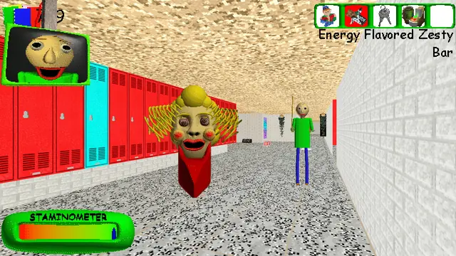

The feel
Weirdcore is nostalgia, but not the rose-tinted kind: less "remember this?" than "why does this feel familiar?"1 Its pictures show deserted hallways, abandoned malls and empty houses, places that feel nostalgic and unsettling at once.2 Like dreamcore, it uses lo-fi technology and nightmarish imagery to put the viewer into a suggestible state.3
Where dreamcore stays dreamlike, weirdcore goes darker and uses the surreal to unsettle.2 It sets out to look wrong, with misaligned elements, dated interfaces and surreal phrases scrawled across abandoned landscapes.1 Its text speaks straight to you, like an unseen narrator who is watching, giving directions and commenting.2 There is no monster to point at, only emptiness, a familiarity that is slightly off, and whatever you bring to it.1
- over-compressed
- watched
- anonymous
- wrong
- lost
- nostalgic for nowhere
Where it comes from
Weirdcore grew out of liminal space images, which began with the famous Backrooms photo posted on 4chan in 2019.2,3 During the pandemic they became a full online phenomenon and branched into "-core" aesthetics, the most popular being dreamcore, weirdcore and nostalgiacore, though the exact origin of each is hard to track.2 Creative Bloq traces weirdcore further back, to early creepypasta forums and 4chan lore.1 It has since reached film: Kyle Edward Ball, who made Skinamarink, says of his cinematographer Jamie McRae, "He's also interested in the same weird subreddits as I am, like /liminalspaces and /weirdcore."4
Core elements
Deliberately poor editing
Weirdcore images are purposely edited poorly, to look like the web of the late 1990s and early 2000s, with old monitors, glitch art and Tumblr-era amateur editing.2 Old Windows wallpapers with game prompts asking whether you want to enter or exit turn up again and again.5
Empty familiar places
Deserted hallways, abandoned malls, empty houses and childhood things, with a twist of the surreal and of horror.2 Ian Dean's list runs from the hallway outside his childhood bedroom and the car park behind Blockbusters to green-hued hallways and classrooms.1
Text addressed to the viewer
The creator adds text to an old image, and it carries an anonymous voice to whoever is looking.2 It speaks to the viewer directly, often to make them question their own existence.2 Creative Bloq's example is "you were never meant to be her".1
Out-of-place objects
An object from outside intrudes on the ordinary and makes it feel wrong: an interior set against an exterior, or two houses placed out of proportion in a field.2 The collage and unlikely juxtapositions are close to surrealism, but Valentina Tanni notes they offer an unnerving familiarity rather than the liberation the surrealists looked for in dreams.6
Floating eyes
Weirdcore often uses an eye as a partial human presence, cut off from the body.2 Out of scale and out of context, like an eye floating in a grocery store, it makes a familiar place weird.2 Tanni finds eyes and wings recurring in dreamcore too, perhaps to suggest that "someone, or something, is watching us".6
Flat black shapes
A flat black shape dropped into an empty area breaks the picture's coherence.2 With a line of text beside it, it hints at something not quite missing, only hidden.2
How to do it
Choose an ordinary place
You need no design training, just "some iffy clip art, old photos, and a willingness to embrace imperfection".1 Choose a place tied to childhood, such as an empty hallway, living room, bedroom, playground or mall, and leave the people out.2
Paste in something out of place
Bring in one thing that doesn't belong, or something at the wrong scale.2 Cut it out with a hard-edged selection: turn off antialiasing, which smooths the boundary, and feathering, which blurs it.7
Add an eye or a black shape
Float a lone eye at the wrong size, or drop a flat black shape into an empty area, so the picture stops adding up.2
Address the viewer in text
Add text that speaks to the viewer directly, like a narrator who is watching and giving directions, such as "Don't let it find you" or "Where did the time go?"2
Re-save as a low-quality JPEG
Export as JPEG at a quality far below 85 out of 100, a setting that usually gives excellent results, and with 2x2,1x1,1x1 (4:1:1) chroma subsampling, which tends to denature colours.8 Open it and export again: losses show after about five saves, and by the tenth come obvious blotching and colour changes.9 Vary the quality each time, because a new setting, even a higher one, loses more than the same one.8,10
Render it in low-res 3D
Fatum Betula shows one route: a PlayStation 1-era look of pixelated textures and blocky models, in rooms as intimate as an apartment.11 Render at the small resolution you want and stretch the result to the final window size.12 Then make the player hunt for what is off, as The Exit 8 does with subtle inconsistencies in endless subway tunnels.1
Leave things unexplained
In most weirdcore images the viewer completes the story.13 In a game, hide things and don't point at them: Bryce Bucher had "basically no interest in heavily leading people towards the hidden stuff" in Fatum Betula.11
Cheat sheet
- Subject
- Familiar places, empty of people2
- Intruders
- An eye, a black shape, a thing out of scale2
- Text
- Addressed to the viewer by someone unseen2
- Cut-outs
- Antialiasing and feathering off7
- JPEG quality
- Far below 85 of 100, with 2x2 subsampling8
- Saves
- Losses show after about 5, blotches and colour shifts by 109
- Block grid
- 8 x 8 pixels, 16 x 16 for colour10
Do
Avoid
- A monster. Weirdcore gives you spaces to dread, not faces to fear.1
- Jump scares. The dreamcore filmmaker Tata Dovnar keeps viewers waiting for one "that might never come, because the atmosphere itself is already suffocating enough".3
- A polished, generated look. As tools become "perfect and generative", the appeal lies in the imperfect,1 and in art that feels made by human hands.3
- One clean save at high quality. A first-generation JPEG saved that way can rarely be told from a lossless file.9
- Explaining it. The eerie disappears once the audience learns what the hidden presence is.2
Tools and tutorials
- The Ways of Weirdcore
A walk through how these images get made.
- I Tried Making My Own Weirdcore
An honest attempt from scratch, including what falls flat.
- How to make PS1 Graphics in 4 minutes
A quick route to a low-res 3D room in Blender.
- Photopea
A free image editor that runs in the browser.
- GIMP
Free. Its JPEG export has a 0 to 100 Quality slider and a subsampling setting.8
- Godot: Multiple resolutions
How to render at a low base resolution and stretch it to the window.12
Palette
Sampled from a Commons weirdcore collage, Petscop, Hylics, Salad Fingers, Fatum Betula and Milk inside a bag of milk. Pick one strong colour for each picture and let the JPEG invent the rest.
Feel the vibe
In motion
Listen
Its recurring "Level1" recalls 32-bit era soundtracks, with squelchy, compressed samples, and Domenico has named vaporwave as an influence: "It's nostalgic and also scary."14
YouTubeIt sounds like the game looks: clumsy, warm and somewhere else.
YouTubeCheerful in a way that makes you check behind you.
YouTubeA hazy loop for walking around a place you can't place.
YouTubeWarped tape. Dazed hears melodies in this vein looping uneasily behind Salad Fingers.15
YouTube
More references










Games
- Petscop
A Let's Play of a "purportedly unfinished" 1997 PlayStation game that never existed.14 Study the cheerful colour over dark rooms, and the readouts.
- Dujanah
A lesson in clashing materials. Study the cut-outs pasted on white with burnt edges.
- Baldi's Basics Plus
Study how a cheap-looking school turns from joke into threat.
- Fatum Betula
Bryce Bucher's PlayStation 1-era look of pixelated textures and blocky character models.11 Good for scale and odd NPCs.
- Milk inside a bag of milk inside a bag of milk
Disjointed, cryptic pixel art that turns buying milk into a creepy, broken errand.1
- Who's Lila?
Study the face you pull out of shape to answer: uncanny as a game mechanic.
- The Exit 8
Study the endless subway tunnels, where you look for subtle inconsistencies.1
Film, art and more
- Salad Fingers
David Firth's Flash series, first shown on Newgrounds in 2004.15 Study the muddy colours, slow pacing and very polite voice.
- Don't Hug Me I'm Scared
A "horrifying and blackly comic" puppet show that began on YouTube in 2011.15 Study how fast a friendly format can turn.
- To Edgar Poe
An eye that rises like a balloon over a marsh. Study it as a visual parallel, not an influence.
- Skinamarink
Kyle Edward Ball's debut feature; he follows r/liminalspaces and r/weirdcore.4 Study the dark hallways and blocky digital grain.
- Exit Reality
Valentina Tanni's book on vaporwave, the backrooms, weirdcore and their neighbours. She argues they are about how people feel towards images, not how they look.6
Sources
- 1The Weirdcore art trend is the most unsettling thing to happen to nostalgia
- 2Hauntology and the absence aesthetics: an examination of liminal internet aesthetics
- 3The internet's favorite horror subgenre is breaking into the big time
- 4Skinamarink Director Shares the Tragic Loss Behind the Horror Phenomenon
- 5Is aesthetics formed on the Internet? Bored generations and web hypnosis
- 6The worlds that internet aesthetics lead us into | Book review: Valentina Tanni’s Exit Reality
- 7Selection Tools
- 8Getting Images out of GIMP
- 9JPEG Images: Counting your Losses
- 10Why JPEG is like a photocopier
- 11The Quiet Horror of ‘Fatum Betula’ Harkens Back to a Classic Era of Games
- 12Multiple resolutions
- 13Liminality in Internet Aesthetics: A Conceptual Analysis Model through Dreamcore and Weirdcore Examples
- 14Behind the Music of “Petscop,” The Cursed Video Game That Never Was
- 15Salad Fingers: how the patron saint of Weird YouTube came to life